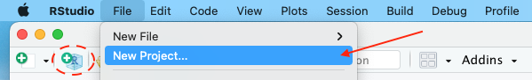
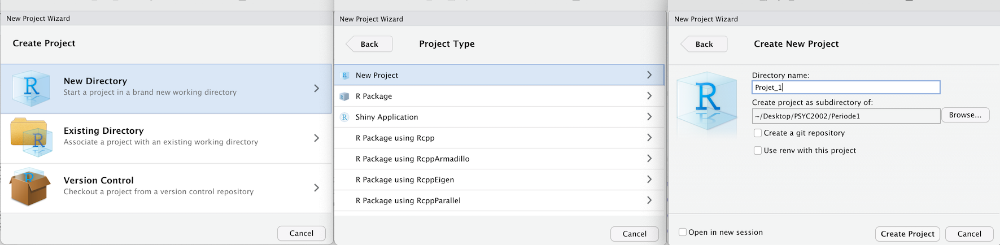
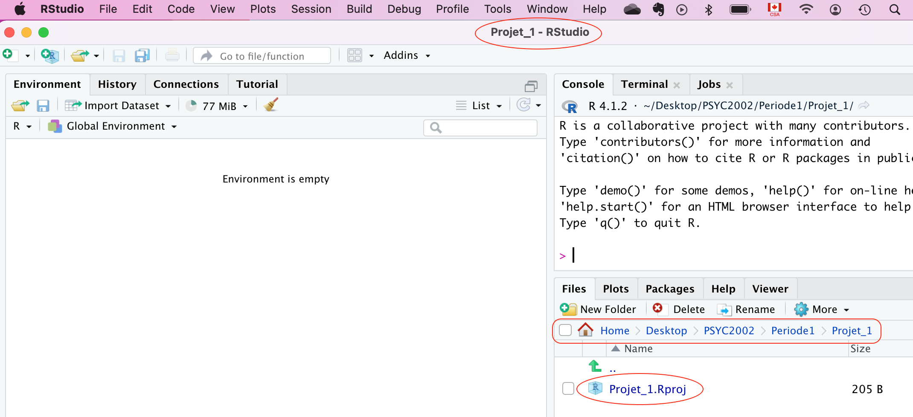
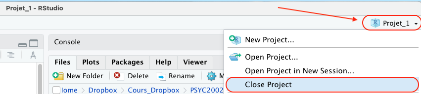
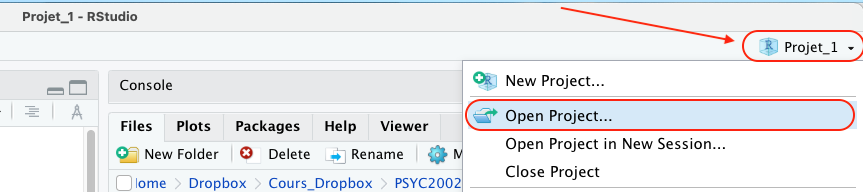
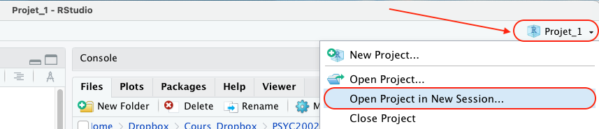
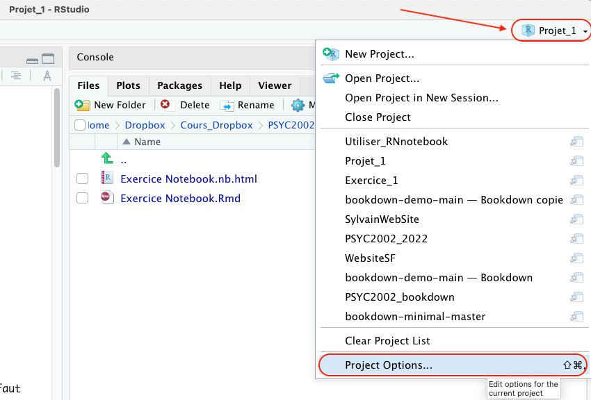
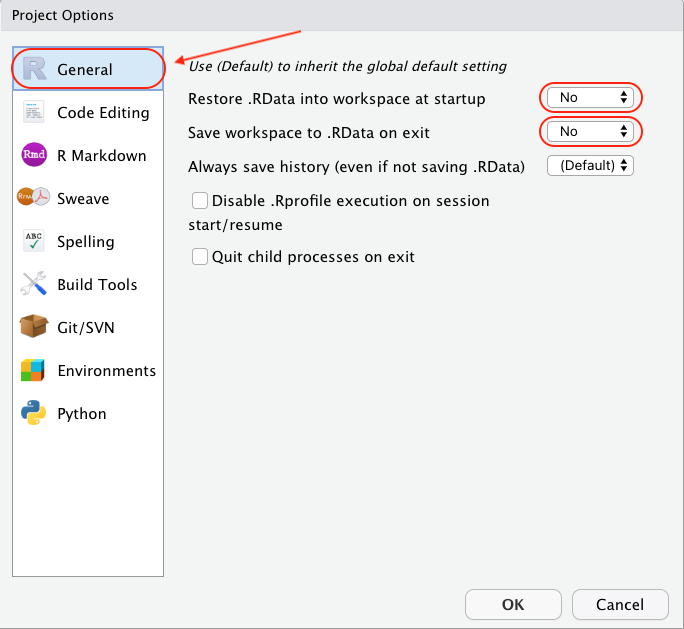
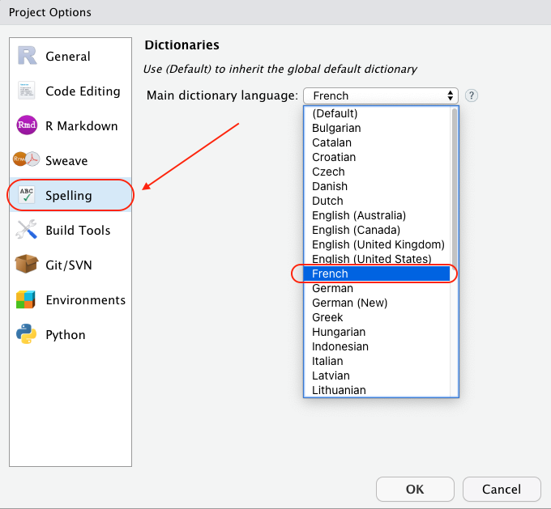

6 Projet RStudio - niveau I
Puisque la démarche d’analyse de données nécessite le besoin de travailler avec plusieurs fichiers, je recommande fortement de créer un Projet RStudio. Un Projet RStudio est un répertoire sur votre ordinateur qui contient tous les fichiers nécessaires pour compléter un projet d’analyses statistiques. Cette approche permet de s’assurer que tous les fichiers (.Rmd, .txt, .dat, .csv, etc.) soient disponibles dans le même environnement de travail.
Par expérience, je peux vous assurer que c’est une excellente idée que de créer un projet RStudio. Vous m’en remercierez bien plus tard lorsque vous verrez vos collègues, qui n’utilisent pas cette approche, chercher pendant de nombreuses minutes leurs fichiers de données sur leur disque dur ! Évidemment, ils vont blâmer R et RStudio… ou peut être même leur professeur !
6.1 Nouveau projet RStudio
Pour créer un projet RStudio, il faut ouvrir le logiciel RStudio. Dans le menu RStudio, sélectionnez File > New Project… (ou cliquez sur l’icone avec un rond vert et le signe + blanc à l’intérieur superposé sur un hexagone bleu avec la lettre R à l’intérieur) (voir Figure @ref(fig:fig131)).
Dans la fenêtre qui s’ouvre (voir Figure @ref(fig:fig132)), je vous invite à sélectionner New Directory > New Project > Directory Name:. De cette manière, vous allez pouvoir créer votre répertoire de travail qui contiendra tous vos fichiers. Le nom du projet doit refléter la nature du travail. Sélectionnez le sous-répertoire où vous voulez créer votre projet sur le disque dur de votre ordinateur. Dans l’exemple de la Figure @ref(fig:fig132), j’ai nommé mon projet Projet_1 et, à partir de l’option Browse…, je l’ai placé dans le répertoire ~/Desktop/PSYC2002/Periode1. Aussi, lors de la création du projet R, je suggère de cocher la case Open in new session (voir en base à gauche de la dernière fenêtre de la Figure @ref(fig:fig132)).

Une fois le projet créé, ce dernier s’affiche dans l’en-tête de RStudio et un fichier avec l’extension .Rproj s’ajoute dans le répertoire associé à ce projet (voir @ref(fig:fig133)). Dans mon exemple, ce fichier se nomme Projet_1.Rproj et la fenêtre Files de RStudio nous indique qu’il se trouve dans le répertoire associé à ce projet.

6.2 Fermer un projet RStudio
Une fois que votre projet RStudio est créé, vous pouvez le fermer en sélectionnant, dans le menu principal de RStudio, l’onglet File et sélectionner Close project dans la bande déroulante. Il est aussi possible de fermer votre projet en cliquant sur le nom de votre projet (coin supérieur droit de RStudio) et de sélectionner Close Project dans la bande déroulante (voir @ref(fig:closeRproject)).

6.3 Ouvrir un projet RStudio
Au début d’une session de travail, lorsque vous désirez ouvrir un projet RStudio en particulier, rendez-vous, à l’aide du logiciel Finder (Mac) ou Explorateur de fichiers (PC) dans le répertoire qui contient ce fichier .Rproj sur votre ordinateur et cliquez sur le nom du fichier .Rproj. RStudio va ouvrir le projet et les fichiers associés.
Une autre approche consiste à ouvrir RStudio et, dans le menu principal de RStudio, sélectionnez l’onglet File et dans la bande déroulante, sélectionnez Open Project… ou Recent Projects. Il est aussi possible d’ouvrir votre projet en cliquant sur le nom de votre projet (coin supérieur droit de RStudio) et de sélectionner Open Project… ou Recent Projects dans la bande déroulante (voir @ref(fig:openRproject)).

6.4 Ouvrir plusieurs projets RStudio stimultanément
Régulièrement, l’analyste travaille sur plusieurs projets simultanément. Il doit donc ouvrir deux ou plusieurs projets RStudio en même temps sur son ordinateur. Après l’ouverture d’un premier projet RStudio, l’approche pour ouvrir un second projet RStudio consiste à sélectionner l’option Open Project in New Session… dans la bande déroulante (voir Figure @ref(fig:openRprojectNS)). De cette manière, l’analyste pourra se déplacer d’un projet à l’autre sans fermer le premier projet ouvert, ce qui se produirait en optant pour l’option Close Project.

6.5 Options Projet RStudio
Finalement, voici quelques options que je vous encourage à sélectionner pour vos projets RStudio. Débutons par ouvrir la fenêtre des options associées aux projets RStudio. Dans la bande déroulante, sélectionnez l’option Project Options…, juste en bas de la liste (voir @ref(fig:optionRproj)).

6.5.1 Options General
Dans l’onglet General, sélectionnez l’option No pour les deux premiers choix. Cela va réduire la durée de la fermeture de vos projets RStudio (voir @ref(fig:optionRprojGeneral)).

6.5.2 Options Spelling
Dans l’onglet Spelling, sélectionnez le dictionnaire French dans la bande déroulante du dictionnaire principal (voir la Figure @ref(fig:optionRprojSpell)). Si le dictionaire French n’est pas disponible, veuillez installer les dictionnaires additionnels en suivant la procédure présentée à la section @ref(dictadd).

6.6 Rprojet - niveau avancé
Le Chapitre @ref(niveau2) va plus en détails dans l’organisation de la structure d’un projet RStudio. Vous êtes invités à y jeter un coup d’oeil.